Soru 1Cevap: B
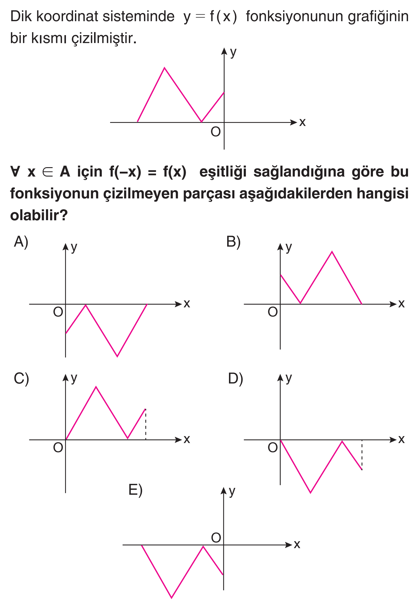
Çözüm
- $f(-x)=f(x)$ ise grafik $y$ eksenine göre simetriktir.
- Çizilen parça $y$ ekseninin solunda iki tepe içeriyor.
- Eksik parça bunun $y$ eksenine göre yansıması olmalı: sağda iki tepe (B).
Cevap: B
Soru 2Cevap: C
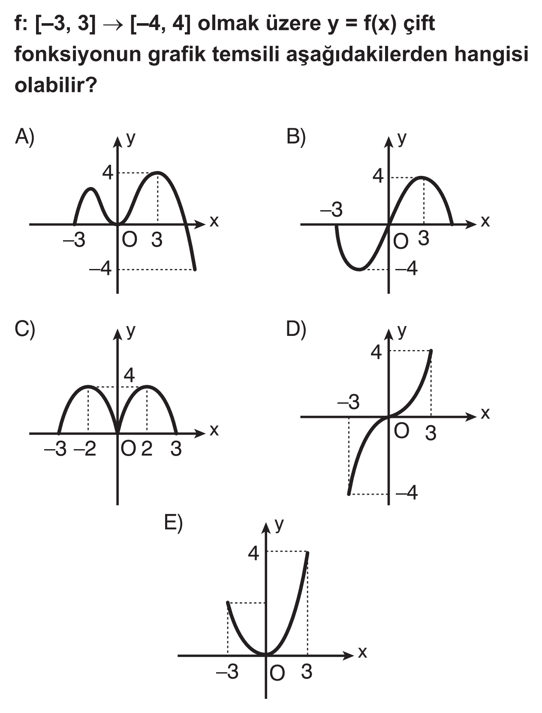
Çözüm
- Çift fonksiyonun grafiği $y$ eksenine göre simetriktir.
- A, B, D ve E'de sağdaki parça soldakinin yansıması değil (D orijine göre simetrik: tek).
- C'deki iki tepe $y$ eksenine göre simetrik: cevap C.
Cevap: C
Soru 3Cevap: B
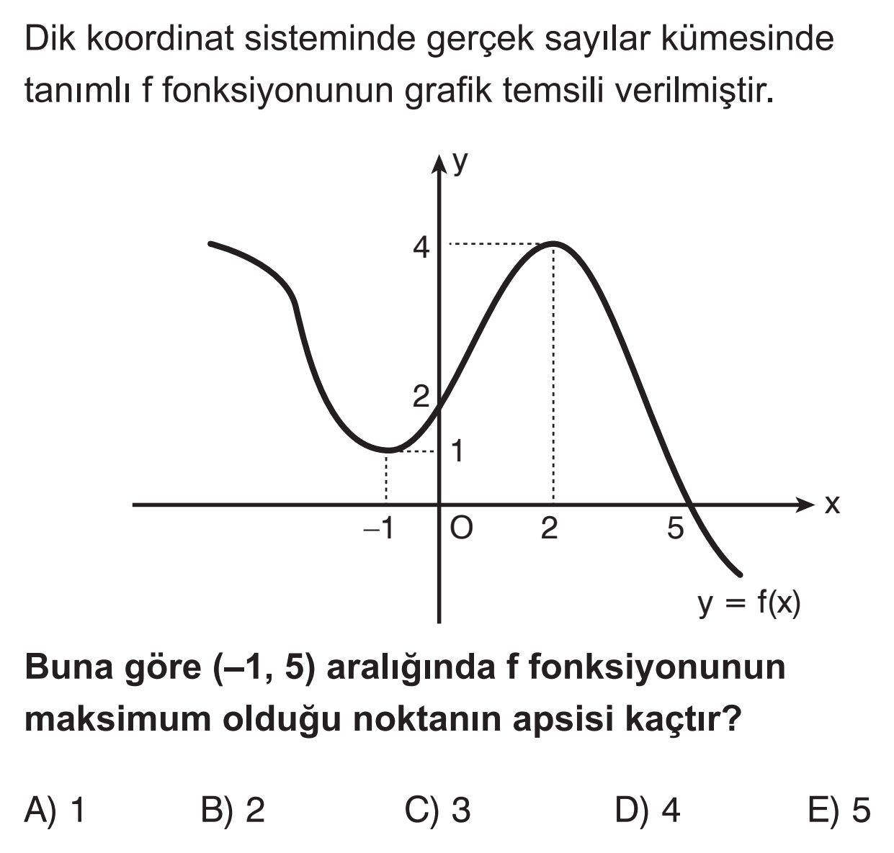
Çözüm
- $(-1,5)$ aralığında grafiğin en yüksek noktası aranıyor.
- Grafik $x=2$'de $4$ değeriyle tepe yapıyor; aralığın içindeki diğer değerler daha küçük.
- Maksimum noktanın apsisi $2$ (B).
Cevap: B
Soru 4Cevap: C
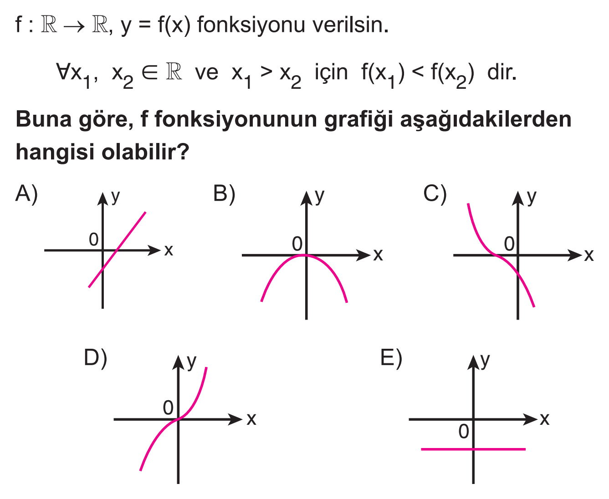
Çözüm
- $x_1\gt x_2$ iken $f(x_1)\lt f(x_2)$: büyük $x$'in görüntüsü küçük, yani $f$ azalandır.
- Azalan fonksiyonun grafiği soldan sağa sürekli aşağı iner.
- Seçeneklerden yalnız C sürekli inen bir grafiktir.
Cevap: C
Soru 5Cevap: B
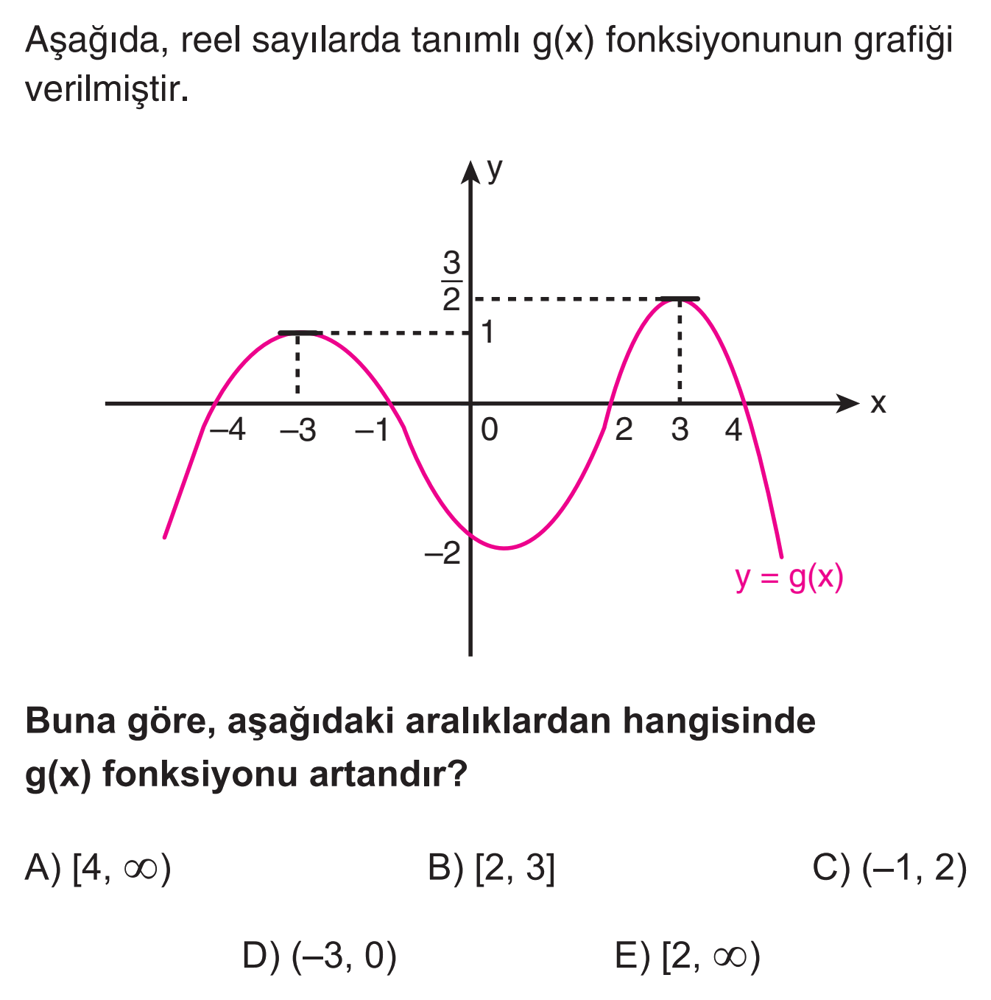
Çözüm
- Grafik $x=-3$'te tepe, $x=0$'da çukur, $x=3$'te tepe yapıyor.
- $g$; $(-\infty,-3]$ ve $[0,3]$'te artan, $[-3,0]$ ve $[3,\infty)$'da azalandır.
- $[2,3]\subset[0,3]$ olduğundan cevap B.
Cevap: B
Soru 6Cevap: E
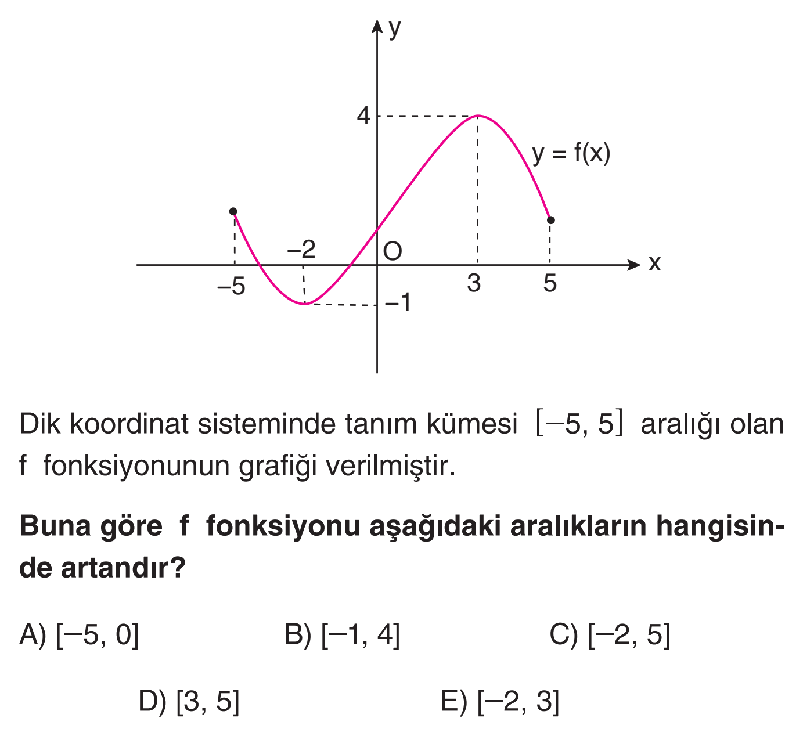
Çözüm
- Grafik $x=-2$'deki en alçak noktadan $x=3$'teki en yüksek noktaya kadar yükselir.
- $[-5,-2]$'de ve $[3,5]$'te ise iner.
- Artan olduğu aralık $[-2,3]$ (E).
Cevap: E
Soru 7Cevap: C
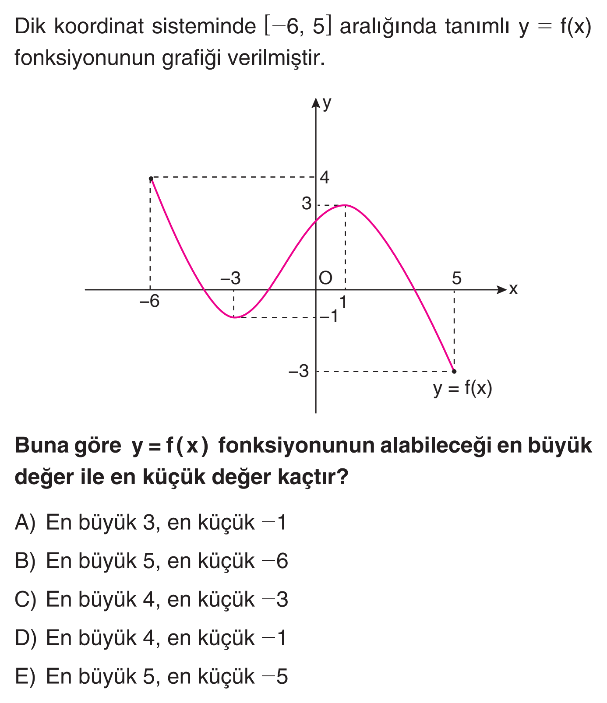
Çözüm
- Tanım kümesi $[-6,5]$; uç noktalar da hesaba katılır.
- $x=-6$'da $f(-6)=4$, bu grafiğin en yüksek noktasıdır (tepe $3$'ten büyük).
- $x=5$'te $f(5)=-3$, en alçak nokta. En büyük $4$, en küçük $-3$ (C).
Cevap: C
Soru 8Cevap: B
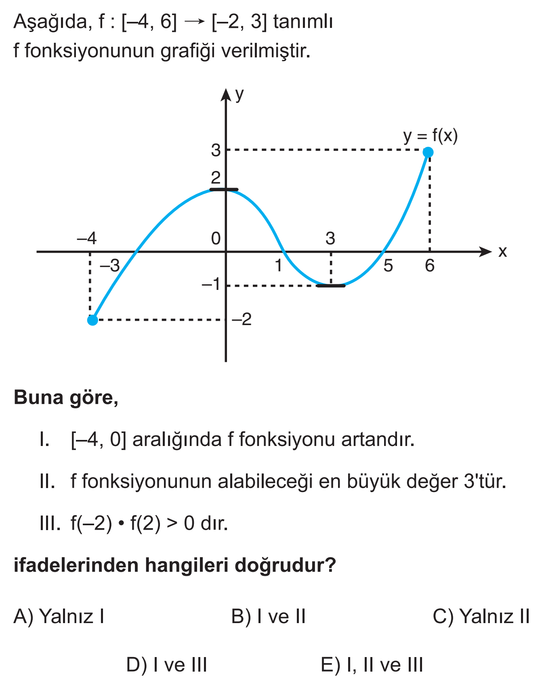
Çözüm
- $[-4,0]$'da grafik $-2$'den $2$'ye yükseliyor: I doğru.
- En yüksek nokta $(6,3)$: en büyük değer $3$, II doğru.
- $f(-2)\gt 0$ (sıfır $-3$'ün sağı), $f(2)\lt 0$ ($1$ ile $5$ arası negatif): çarpım negatif, III yanlış. Cevap B.
Cevap: B
Soru 9Cevap: B
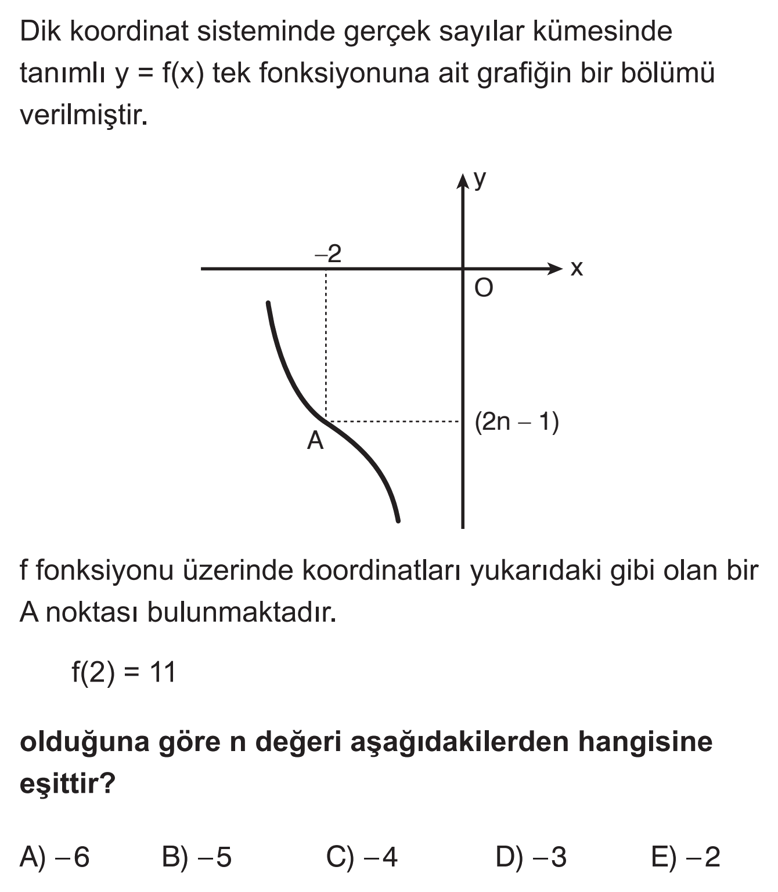
Çözüm
- $f$ tek ise $f(-x)=-f(x)$.
- $f(-2)=-f(2)=-11$.
- A noktası $(-2,\,2n-1)$: $2n-1=-11\Rightarrow n=-5$ (B).
Cevap: B
Soru 10Cevap: A
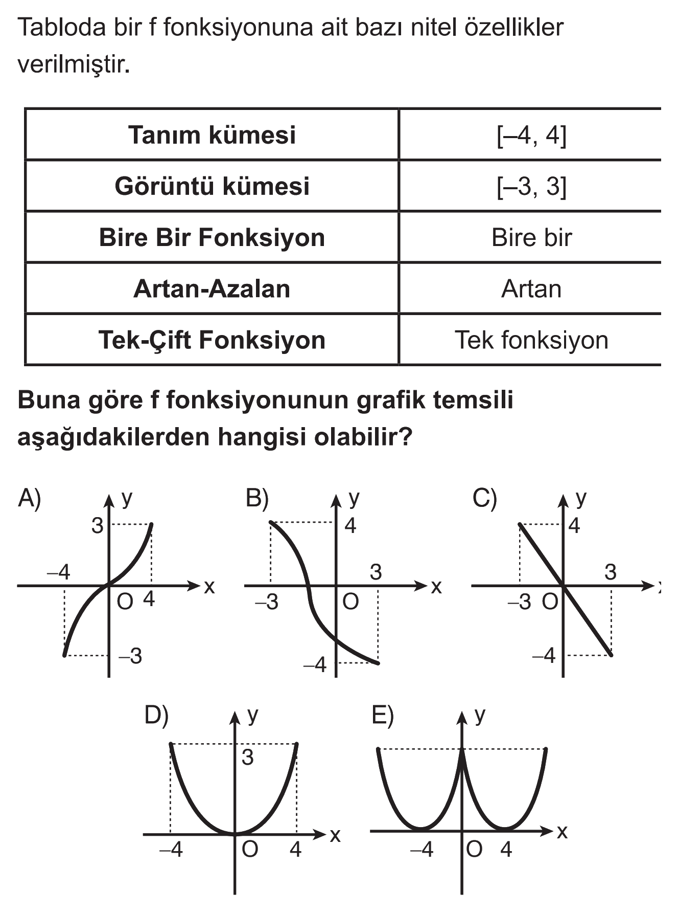
Çözüm
- Tek fonksiyon orijinden geçer ve orijine göre simetriktir; artan olmalı.
- Tanım $[-4,4]$, görüntü $[-3,3]$: grafik $(-4,-3)$'ten $(4,3)$'e yükselmeli.
- B ve C azalan, D ve E çift; A tüm özellikleri sağlar.
Cevap: A
Soru 11Cevap: D
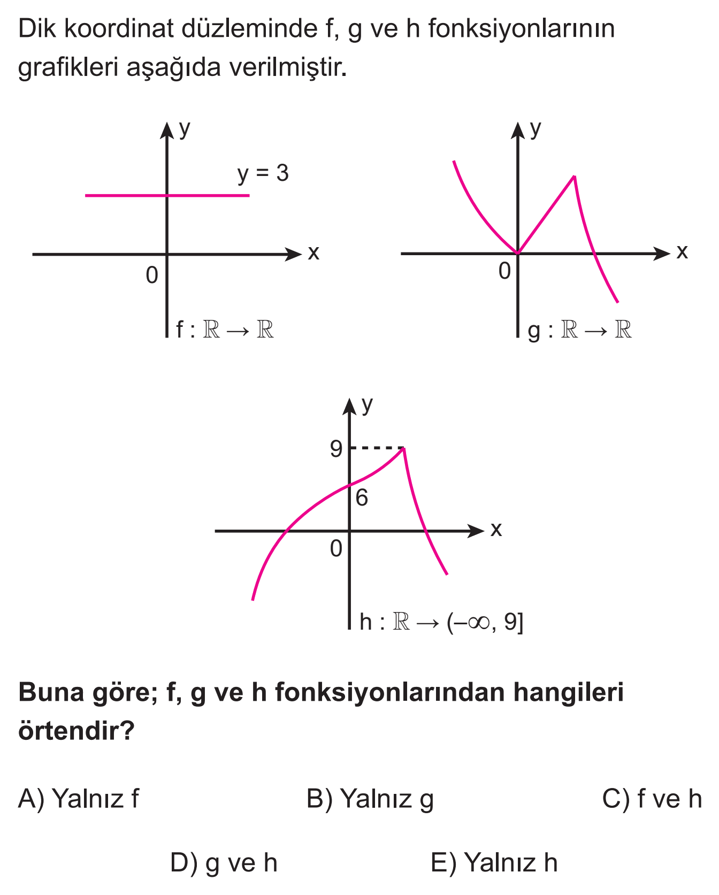
Çözüm
- Örten: görüntü kümesi değer kümesine eşit olmalı.
- $f(x)=3$ yalnız $3$ değerini alır, $\mathbb{R}$'ye örten değil. $g$ grafiği $+\infty$'dan $-\infty$'a tüm değerleri alır: örten.
- $h$'nin en büyük değeri $9$ ve aşağı doğru sınırsız: görüntü $(-\infty,9]$ = değer kümesi, örten. Cevap: $g$ ve $h$ (D).
Cevap: D
Soru 12Cevap: B
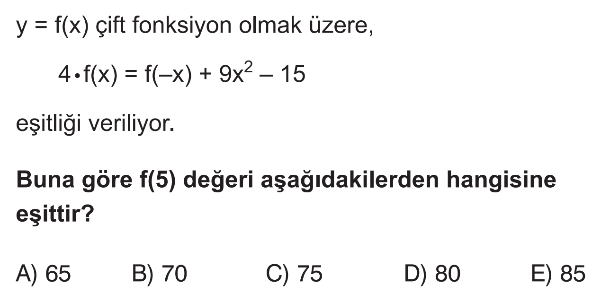
Çözüm
- $f$ çift ise $f(-x)=f(x)$.
- $4f(x)=f(x)+9x^2-15\Rightarrow 3f(x)=9x^2-15\Rightarrow f(x)=3x^2-5$.
- $f(5)=75-5=70$ (B).
Cevap: B
Soru 13Cevap: E
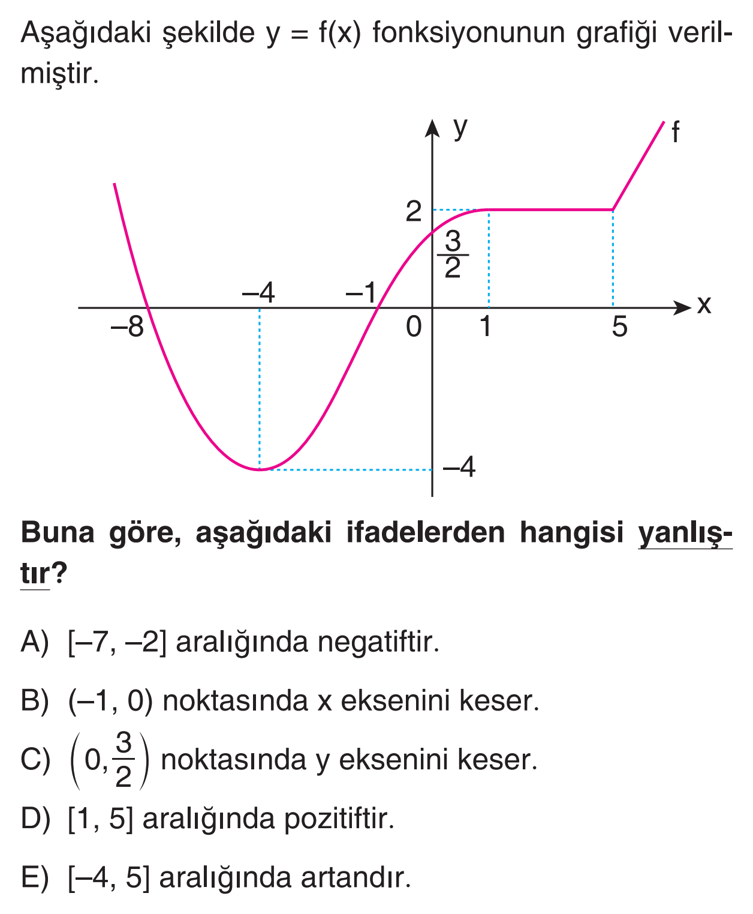
Çözüm
- Sıfırlar $-8$ ve $-1$: $[-7,-2]$'de negatif, $(-1,0)$'da $x$ eksenini keser.
- $[1,5]$'te sabit ve pozitif ($2$).
- $[1,5]$'te sabit olduğundan $[-4,5]$'in tamamında artan değildir: yanlış olan E.
Cevap: E
Soru 14Cevap: D
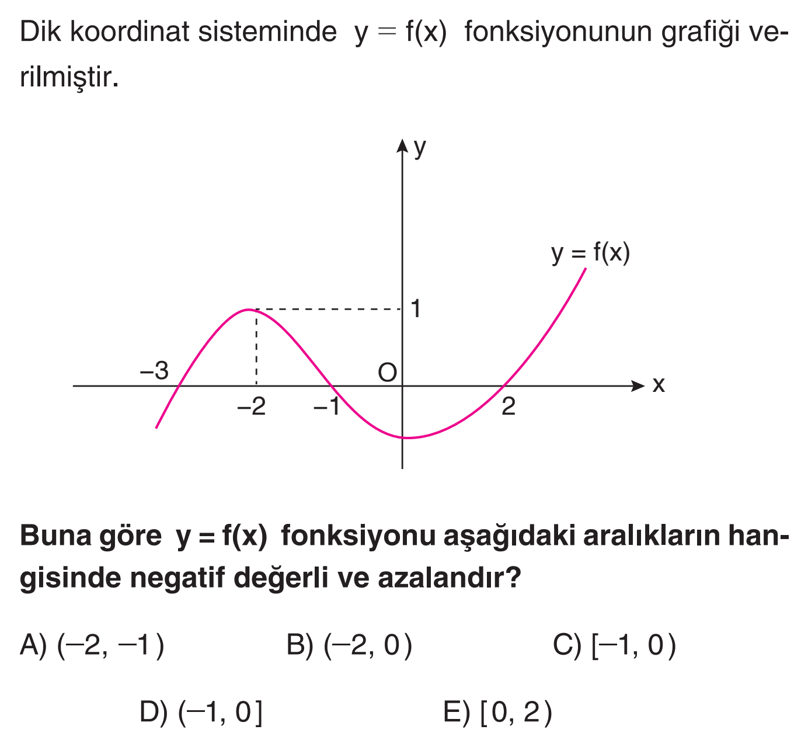
Çözüm
- $f$, sıfırları $-1$ ile $2$ arasında negatiftir.
- Bu aralıkta grafik $x=-1$'den en alçak noktaya ($x=0$ civarı) kadar iner.
- Hem negatif hem azalan: $(-1,0)$; $x=-1$'de $f=0$ olduğundan aralık açık (D).
Cevap: D
Soru 15Cevap: E
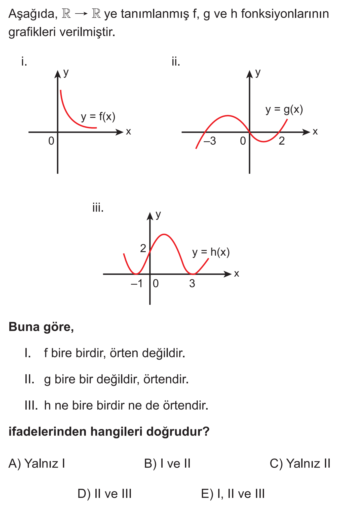
Çözüm
- $f$ sürekli azalır (yatay doğru bir kez keser): bire bir; yalnız pozitif değer alır: örten değil. I doğru.
- $g$'yi $y=0$ doğrusu üç noktada keser: bire bir değil; tüm gerçek sayıları alır: örten. II doğru.
- $h$'yi bazı yatay doğrular iki kez keser, negatif değerlerin hepsini almaz: ne bire bir ne örten. Cevap: I, II ve III (E).
Cevap: E
Soru 16Cevap: D
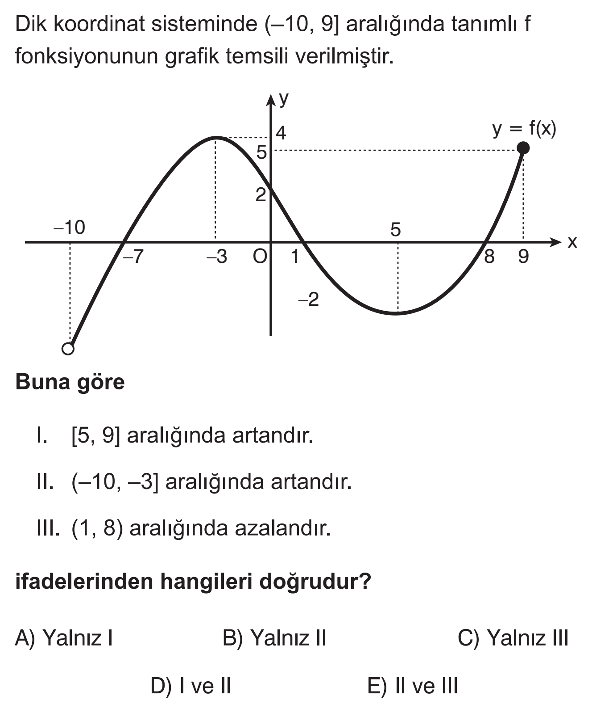
Çözüm
- Grafik $x=-3$'te tepe, $x=5$'te çukur yapıyor.
- $(-10,-3)$'te ve $[5,9]$'da yükseliyor: I ve II doğru.
- $(1,8)$'in $(5,8)$ kısmında artıyor: III yanlış. Cevap D.
Cevap: D
Soru 17Cevap: B
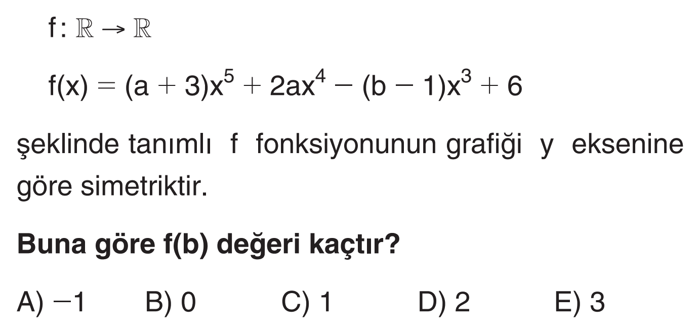
Çözüm
- $y$ eksenine göre simetrik: tek dereceli terimler olmamalı.
- $a+3=0\Rightarrow a=-3$; $b-1=0\Rightarrow b=1$.
- $f(x)=-6x^4+6\Rightarrow f(1)=0$ (B).
Cevap: B
Soru 18Cevap: B
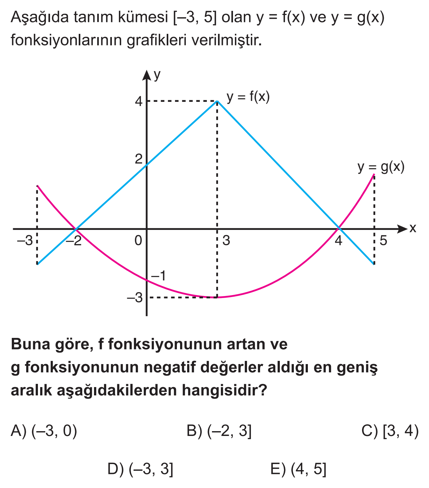
Çözüm
- $f$, $x=-3$'ten $x=3$'teki tepe noktasına kadar artan: $[-3,3]$.
- $g$, sıfırları $-2$ ve $4$ arasında $x$ ekseninin altında: $(-2,4)$'te negatif.
- İki koşulu birlikte sağlayan en geniş aralık $(-2,3]$ (B).
Cevap: B
Soru 19Cevap: E
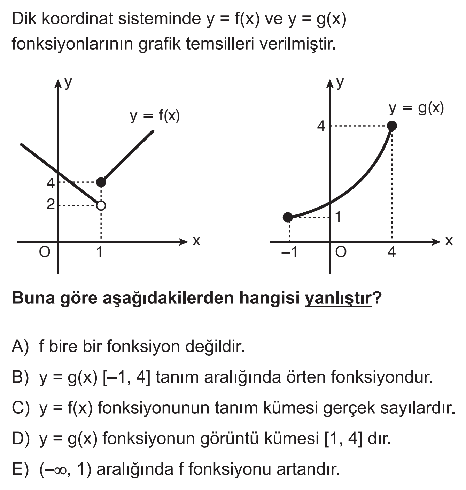
Çözüm
- $f$'nin sol parçası $x=1$'e kadar iner, sağ parçası $4$'ten yukarı çıkar: $(-\infty,1)$'de $f$ azalandır.
- Diğer seçenekler: sol parça $2$'nin üstündeki değerleri, sağ parça $4$'ün üstündekileri de aldığından $f$ bire bir değil (A doğru); $g$, $[-1,4]$'te $1$'den $4$'e artar (B, D doğru); $f$ her $x$ için tanımlı (C doğru).
- Yanlış olan E'dir.
Cevap: E
Soru 20Cevap: A
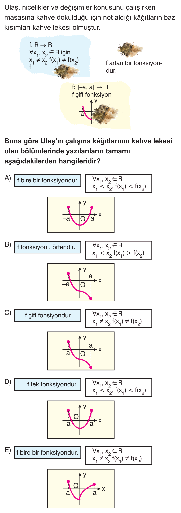
Çözüm
- Birinci kâğıt: $x_1\ne x_2\Rightarrow f(x_1)\ne f(x_2)$ bire birin tanımıdır; ikinci: artan fonksiyonun tanımı $x_1\lt x_2\Rightarrow f(x_1)\lt f(x_2)$.
- Üçüncü kâğıt $[-a,a]$'da çift fonksiyon: grafik $y$ eksenine göre simetrik olmalı.
- Üç bilgiyi birlikte veren seçenek A'dır.
Cevap: A
Soru 21Cevap: C
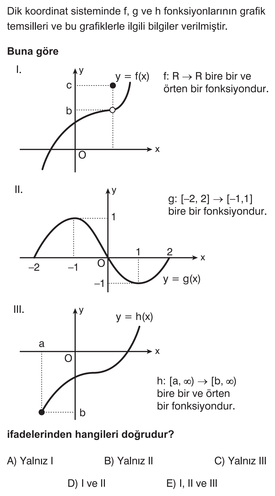
Çözüm
- I: $f$'nin grafiğinde $b$ ile $c$ arasındaki değerler alınmıyor; örten değil, I yanlış.
- II: $g(-2)=g(0)=g(2)=0$; bire bir değil, II yanlış.
- III: $h$, $[a,\infty)$'da sürekli artarak $b$'den başlayıp tüm büyük değerleri alır: bire bir ve örten. Cevap C.
Cevap: C
Soru 22Cevap: A
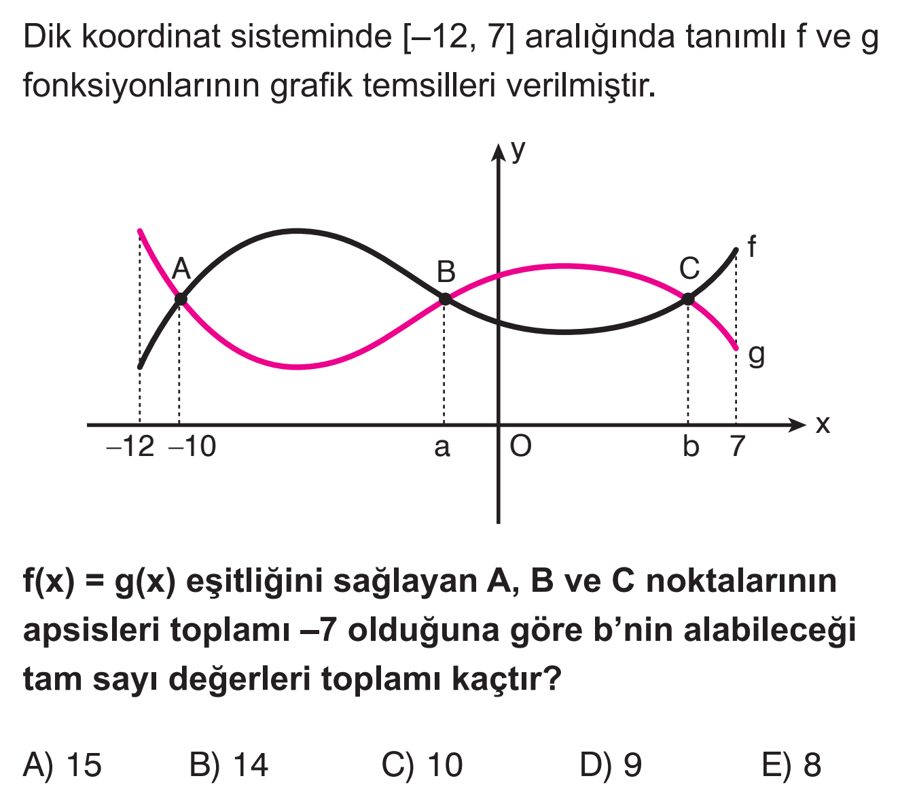
Çözüm
- A noktasının apsisi $-10$; $-10+a+b=-7\Rightarrow a+b=3$.
- Grafikten $-10\lt a\lt 0$ ve $0\lt b\lt 7$; $a=3-b\lt0\Rightarrow b\gt3$.
- $3\lt b\lt 7$: tam değerler $4,5,6$; toplam $15$ (A).
Cevap: A
Soru 23Cevap: E
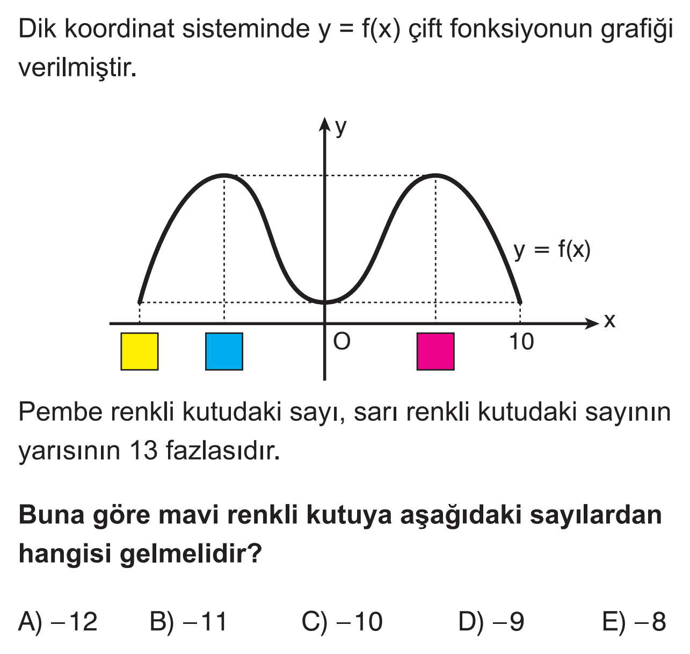
Çözüm
- Çift fonksiyonda simetrik noktaların apsisleri zıt işaretlidir; sıfırlar $\pm10$ olduğundan sarı kutu $-10$.
- Pembe kutu $=\dfrac{-10}{2}+13=8$ (sağdaki tepe noktasının apsisi).
- Mavi kutu soldaki tepe: $-8$ (E).
Cevap: E
Soru 24Cevap: C
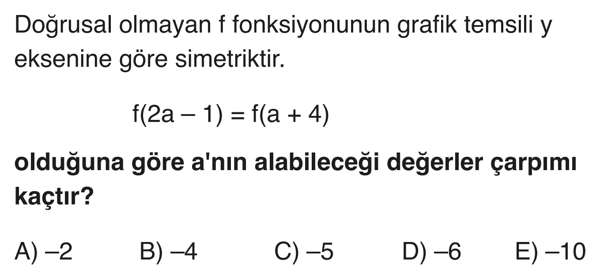
Çözüm
- $y$ eksenine göre simetrik grafikte $f(u)=f(v)$ için $u=v$ ya da $u=-v$ olabilir.
- $2a-1=a+4\Rightarrow a=5$; $2a-1=-(a+4)\Rightarrow a=-1$.
- Çarpım $5\cdot(-1)=-5$ (C).
Cevap: C